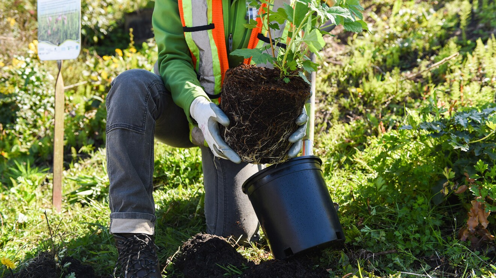
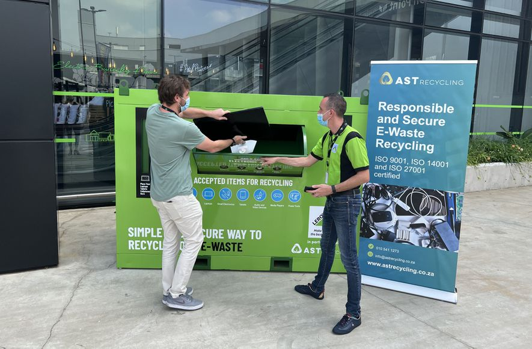
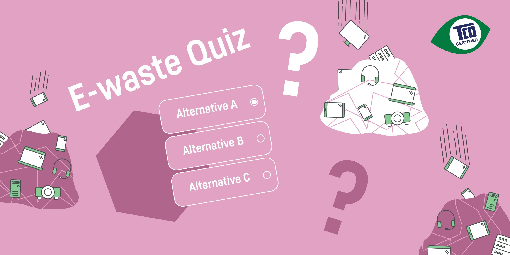

DONATOR REVIEW
An amazing opportunity to get our used materials recycled into something we can use again!! i also got my credit after after attempting quiz and got plant planted..FELT GREAT..
Esha
Software Developer
Cutting-edge technological advancements have turned many electronic devices into waste within a short time of usage. Electronic waste (e-waste) has become a global problem.
First and foremost, e-waste.When disposing of e-waste, you need to bring it to a designated collection place, usually a special recycling bin, a certified collection site, or major electronics retailers.
The first step in processing e-waste involves manual sorting to extract specific items, such as batteries and bulbs, for their own processing. After manual sorting, e-waste is shredded into small pieces to facilitate the precise sorting of materials.
The e-waste is shredded and subjected to magnetic separation to extract ferrous metals like iron and steel, while non-ferrous metals are separated using eddy currents.
Once separated, the materials are readied for reuse and sale. Certain materials, like plastic or steel, are directed to other recycling streams. However, others can be processed onsite and sold directly, along with usable components extracted during earlier stages of the recycling process.
Recycling e-waste is sometimes called urban mining, as it contains some valuable and scarce materials. Recovering certain materials is not only sustainable but also very economical: in the case of gold, copper, and other metals it can be 13 times cheaper than extracting metals from mines.
Materials that can be extracted and re-used include:
1.precious metals such as gold, silver, copper, platinum, rhodium, or ruthenium
2.critical raw materials such as cobalt, palladium, indium, or antimony
3.noncritical metals such as aluminum and iron
4.plastics
5.glass
and other materials.
 E-WASTE INTO PLANT
give your used devices
Get a plant planted.
 E-WASTE LOCATOR
get information about recycling centre at your fingertips.
recycle your device
 E-WASTE QUIZ
Attempt quiz
Get credit points
An amazing opportunity to get our used materials recycled into something we can use again!! i also got my credit after after attempting quiz and got plant planted..FELT GREAT..
Software Developer